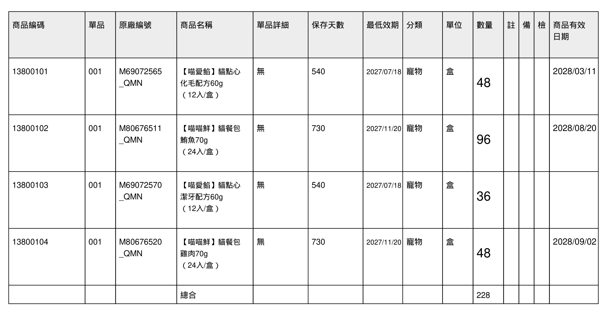
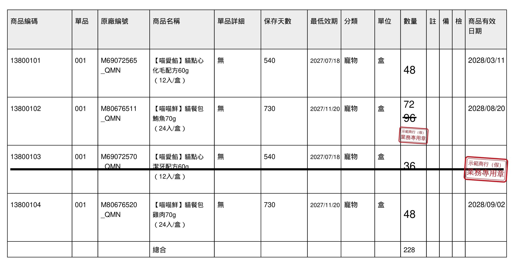

以同一套作業標準，擴展至各通路
「不只是醫生開藥給病人，還要找出方法，告訴他們如何正確地養身體。」
系統只是工具。更重要的是讓同仁養成正確的作業習慣，知道問題出在哪裡、可以怎麼解決。
「如果有人習慣了自己的工作流，不一定要使用這個系統，該如何應對？」
不能只要求同仁配合系統，也要讓系統配合同仁原本的做法。
九月到十一月，系統從單一通路擴展為各通路共用的訂單系統。
酷澎之外，新增蝦皮特選與 MOMO，三個通路共用同一個入口。
寶僑商品主檔自動化、瑪氏出貨，皆已上線。
請提供：各系統目前有幾位同仁在使用。
請提供：同仁估計以前與現在各需要多久。
日期為各項功能第一版完成的時間。
整合表、供需表、商品主檔上傳後，箱數與庫存自動計算，總表可以直接匯出。
訂單明細、總表看板、匯出總表都可使用。匯出的總表與業務原本的檔案格式相同。
出貨彙總表上傳後自動拆單，產出 EIP 採購表與瑪氏採購單，後續再接公司匯入檔與勇信缺貨比對。
拆單、EIP 採購表、瑪氏採購單、公司匯入檔、勇信缺貨核對，五個步驟都已完成。
每次出貨都要手動製作給竹運的拋檔與料號對照表，箱數與電話逐筆填寫。
整合表上傳後，一次產出整包檔案。寶僑與紙潔皆可使用。
三個通路今天有哪些事要處理，打開就知道。
以前由同仁拿筆在單據上逐項畫線、改數量、蓋章。現在把通知單上傳，系統依缺貨核對的結果標好。


十月底收到需求，十一月中旬主要流程完成。
下一個通路 PChome，會沿用同一條流程線建置。
待補：10/20 起累計的處理次數 待補：改單最多的線別 待補：最常見的主因
畫面上的數字為示範資料。實際數字由正式站的改單統計頁匯出後補上。
不靠提醒同仁「要記得」，而是把做法放進每天的作業畫面。
首頁列出今天要處理的事項。快到貨還沒完成的訂單，會以紅字標示剩下幾天。
匯入前先預覽、確認後才寫入。修改紀錄沒有填完，這張訂單就不能結案。
每個步驟旁都有「這一步怎麼做」。新人手冊與營運講義也放在系統裡，隨時可以查。
誰在什麼時候改了什麼，都查得到。有問題時可以回頭確認，不必靠記憶。
習慣不是靠要求養成的，是每天的作業流程帶出來的。
同仁已經有熟悉的做法時，我不要求立刻改用，先讓系統接上原本的工作方式。
例：寶僑總表系統匯出的總表，欄位、順序與公式都和業務原本使用的檔案相同，不必改變看表的習慣。
例：MOMO 業務補貨檔業務整理的補貨檔可以直接上傳，由系統轉成作業需要的格式，不要求對方改用新表格。
例：瑪氏拆單底稿底稿仍由同仁維護，系統只代為填入採購單號與缺貨數量，其餘照舊。
功能已經完成，營運同仁試用中。但業務端的來源報表還沒有整理好，資料無法穩定進到系統。
不催促改用。先維持匯出的總表與原檔一致，讓兩邊可以並行；等來源報表確定後，再把這一段接上。
以下是同仁實際使用後的回饋。
需求說得越具體，做出來的功能就越貼近實際作業。
用真實的檔案對照，才不會做出和實際作業不符的功能。
從最花時間、最容易出錯的地方開始改善，效果最明顯。
完成後以實際檔案核對，結果一致才上線。
沿用蝦皮特選與 MOMO 的同一條流程線建置。
補上目前尚未完成的竹運出貨流程。
系統移到公司的主機，僅開放公司內部網路使用。
尚待確認的規則，持續與同仁釐清後寫進系統與手冊。
把正確的做法放進系統：該處理的事會提醒、容易出錯的地方會擋下、每一次修改都留下紀錄。同仁照著畫面作業，習慣就會養成。
不強制改用。先讓系統配合原本的格式與檔案，從最繁瑣的環節開始分擔，讓同仁自己感受到差別。